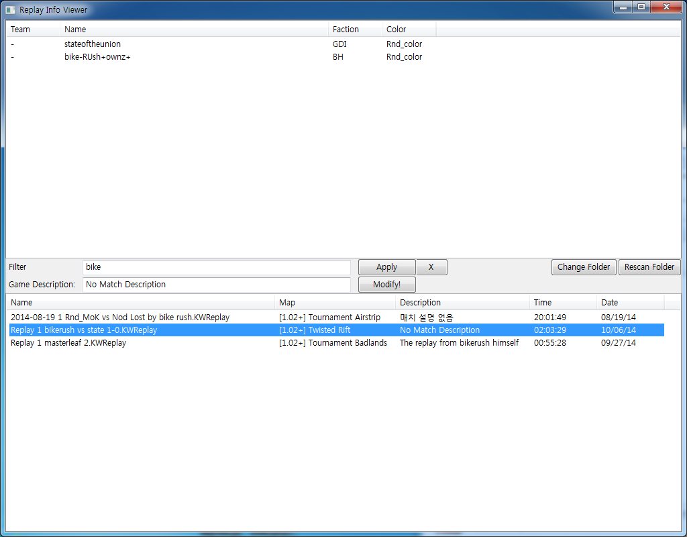

ABOUT
There's a very good tool at http://airlea.nl/kwrt/, which allow players to save their replays semi-automatically. However, I've decided to write my own tool since even the semi-automatic feature doesn't work for me.
INSTALLATION
Grab the latest release from https://github.com/forcecore/KWReplayAutoSaver/releases. Simply unzip the files to any folder of your choice and run autosaver.exe. The application will run in tray and watch for any changes of the last replay. At the first run, it will ask for the "Last Replay.KWReplay", which has variable names depending on the language settings of the game you installed.
USAGE
This replay saver will monitor the last replay and create a copy of it it when the program thinks it saw a change to the last replay. This copying can occur a few times during a match, which is probably the reason why KWRT chose to go for semi-automatic method, rather than fully automatic method. (But don't worry, you'll get only one replay from one game!)
The new name for the replay will contain the time stamp and some of the player information (one of the players who isn't you, you know that you are playing!), e.g, "2014-10-11T1653 vs BoolBada". You can choose not to have player info by right clicking on the tray icon and unchecking the option.
Double clicking or selecting "Open replay manager" tray menu will launch replay manager application. Like the KWRT, it can read many informations from the replay file without launching the game. In addition, it has many features such as:
- Rename with time stamp, (like KWRT) by right clicking on the replays list.
- Modify/embed description into the replay.
- Search replays by player, map, description or replay file name.
- Supports UTF-8. No more unreadable information!
The releases and the sourcodes are available at: https://github.com/forcecore/KWReplayAutoSaver
The replay format is credited to R Schneider: http://www.gamereplays.org/community/index.php?showtopic=706067&st=0&p=7863248&#entry7863248